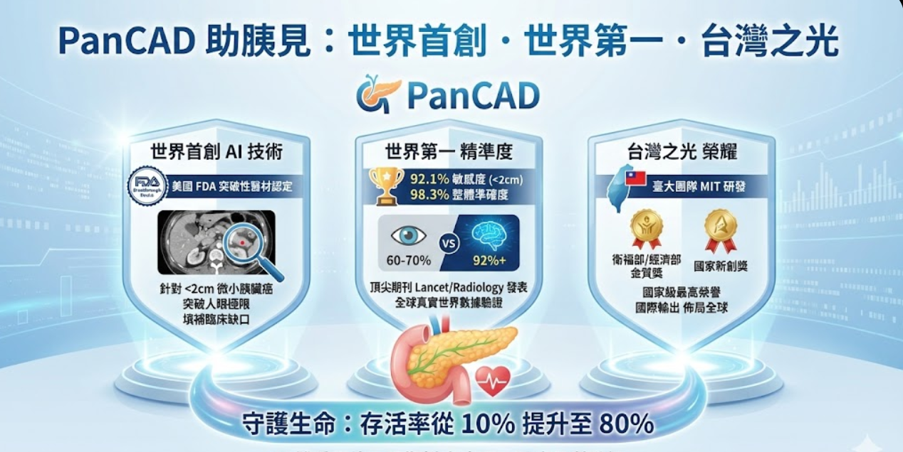

Regulatory Clearance
雙認證，全球唯一
PANCREASaver® 同時取得台灣 TFDA 醫療器材許可與美國 FDA Breakthrough Device 認定。
TFDA 醫療器材許可
台灣衛福部食藥署核發之醫療器材許可證
衛部醫器製字第 007946 號

FDA Breakthrough
美國 FDA 突破性醫材認定（加速審查資格）
Breakthrough Device

國家新創獎
台灣生醫創新最高榮譽之一
National Innovation Award